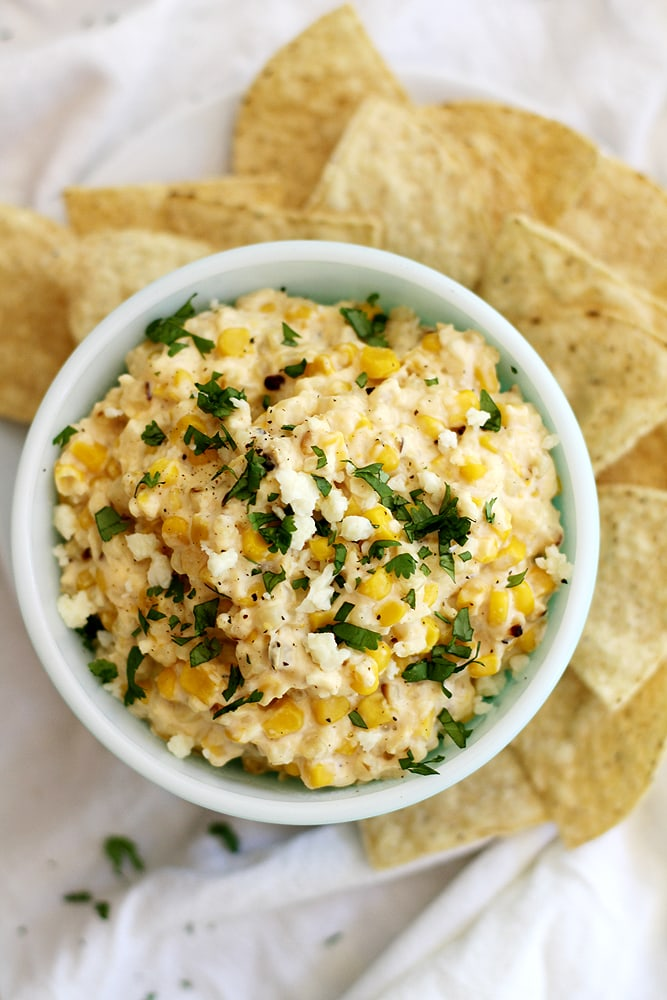

Street Corn Dip

Description:
Looking for a easy meal to please the crowd at your next gathering? We have you covered, with a simple, yet flavorful dip!
Ingredients
- 16oz Cream Cheese
- 2 Cans Southwest Corn
- 1 Yellow Onion
- 8oz Pepper Jack Cheese
- 2/3 Cup Sour Cream
- 5oz Cojita Cheese
- Cilantro
- Salt & Pepper, To taste
- Paprika, To taste
- Vaentina Salsa, To taste
Steps
- In a crockpot, add together all the ingredients listed above.
- Set the crockpot on high for 2 hours.
- Stir the mixture 30 minutes it's before it's done.
- Serve with your favorite chips!
Home